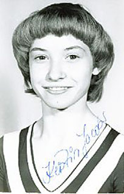

Kerstin Jacob (GDR)
1981 World Championships Team Bronze Medalist

Medal Total
World Championships: 1 Bronze
Kerstin was born in Halle in 1963. She's the head coach at Long Brückner Turnverein in Dresden.
Competition
Results
1979
Jr. ROM-GDR Dual
Meet: 2nd AA
1980
American Cup: 11th AA (prelims)
GDR Championships: 6th V, 7th FX
Intl. Mixed Pairs: 8th Team
Jr. European Championships: 7th AA, 4thB, 5th UB, 6th V
Jr. Friendship Tournament (Druzhba): 2nd Team, 5th V
Moscow News: 4th AA, 2nd FX
1981
Cottbus International: 5th AA (prelims)
GDR-HUN Dual Meet: 1st Team, 9th AA
World Championships: 3rd Team
1982
Rouen International: 5th AA
1999
GER "Seniors" Championships: 5th AA
2004
GER "Seniors" Championships: 11th AA
This page was created on May 22,
2009.
© Gymn Forum